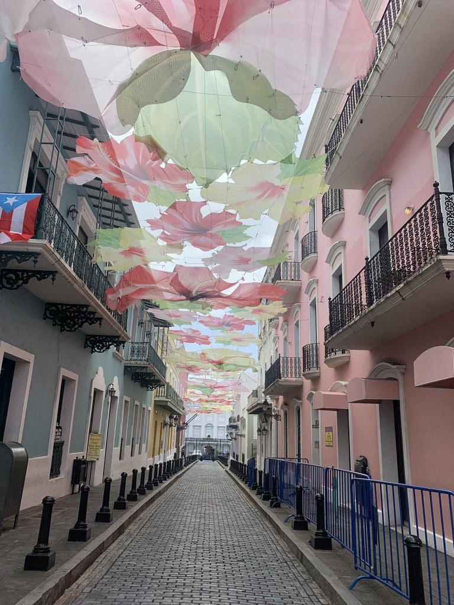
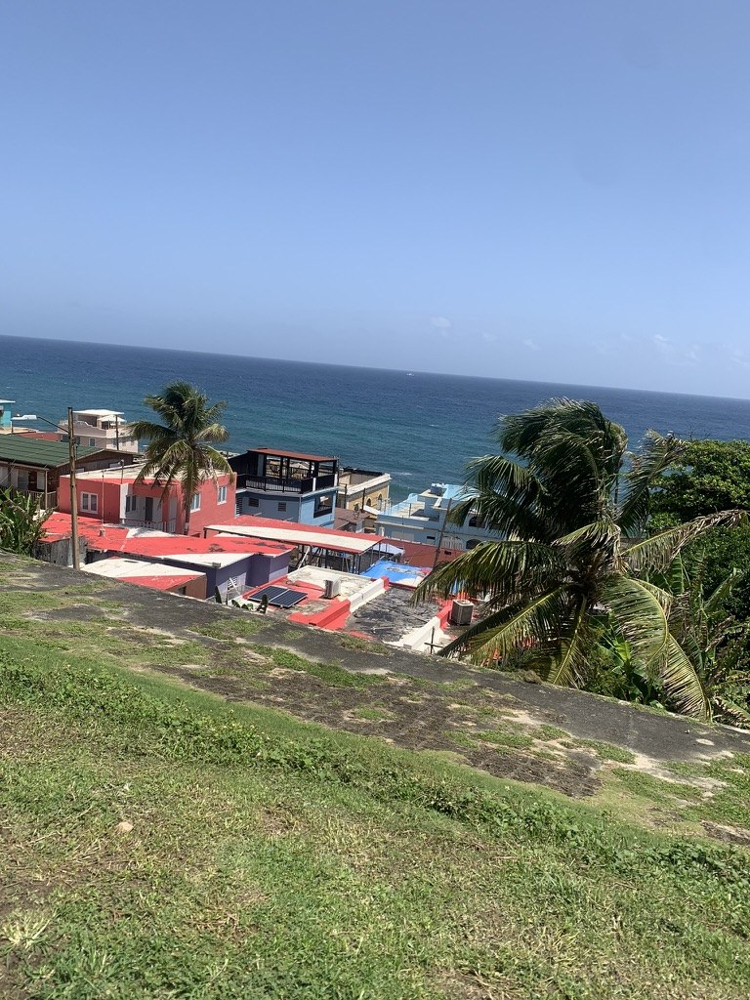
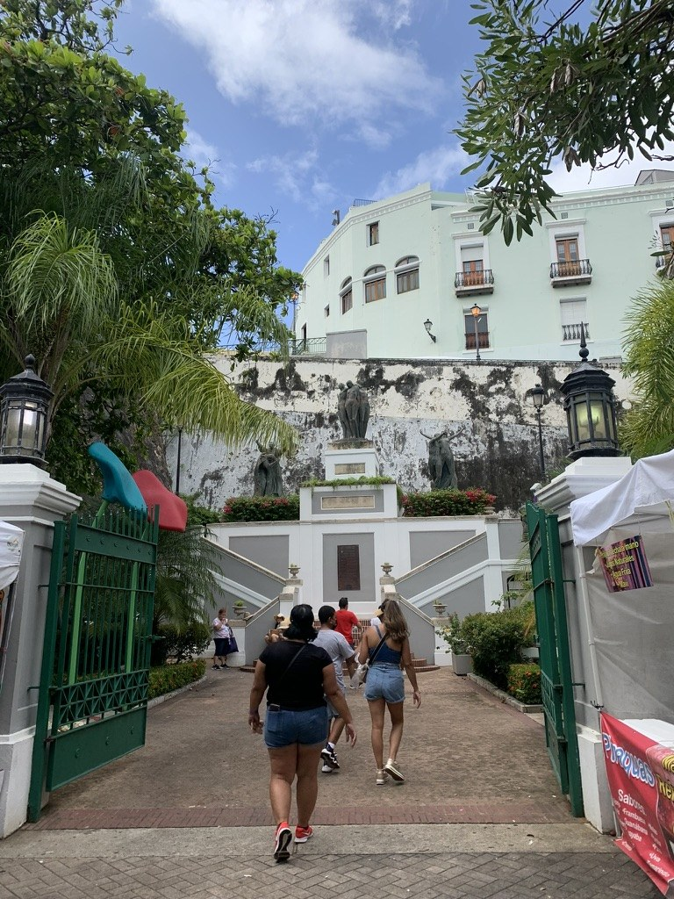

About me
My background
I’m Adrian Nogueira, a first-year student at the New Jersey Institute of Technology (NJIT) from Kearny, New Jersey. My family has Peruvian and Puerto Rican roots: my dad is Peruvian, and my mom is Puerto Rican.



My education
Before NJIT, I attended Kearny High School in Kearny, New Jersey, where I was a member of the DECA club.
Outside the classroom
I enjoy basketball, soccer, and football. I follow the New York Giants, New York Knicks, and FC Barcelona, with soccer being the sport I watch most.

Looking ahead
I’m working toward a career in software engineering. Right now, I’m focused on strengthening my Python skills and learning how to build more complete applications.
See what I’m learning →